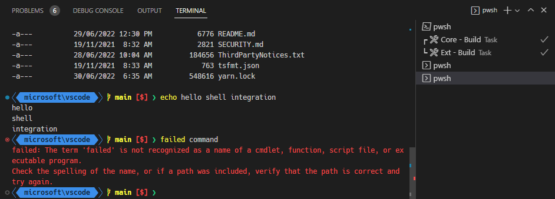
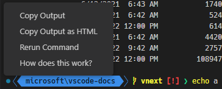
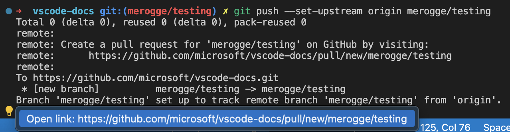
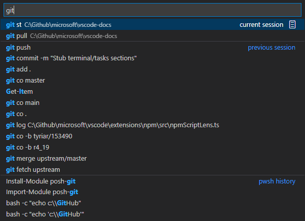
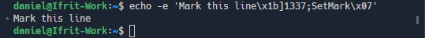

Terminal Shell Integration
Visual Studio Code has the ability to integrate with common shells, allowing the terminal to understand more about what's actually happening inside the shell. This additional information enables some useful features such as working directory detection and command detection, decorations, and navigation.
Supported shells:
- Linux/macOS: bash, pwsh, zsh
- Windows: pwsh
Installation
Automatic script injection
By default, the shell integration script should automatically activate on supported shells launched from VS Code. This is done by injecting arguments and/or environment variables when the shell session launches. This automatic injection can be disabled by setting terminal.integrated.shellIntegration.enabled to false.
This standard, easy way will not work for some advanced use cases like in sub-shells, through a regular ssh session (when not using the Remote - SSH extension) or for some complex shell setups. The recommended way to enable shell integration for those is manual installation.
Note: On Windows, you'll need PowerShell 7 (pwsh) for shell integration support. You can install via https://aka.ms/PSWindows.
Manual installation
To manually install shell integration, the VS Code shell integration script needs to run during your shell's initialization. Where and how to do this depends on the shell and OS you're using. When using manual install it's recommended to set terminal.integrated.shellIntegration.enabled to false, though not mandatory.
Tip: When using the Insiders build, replace
codewithcode-insidersbelow.
bash
Add the following to your ~/.bashrc file. Run code ~/.bashrc in bash to open the file in VS Code.
[[ "$TERM_PROGRAM" == "vscode" ]] && . "$(code --locate-shell-integration-path bash)"
pwsh
Add the following to your PowerShell profile. Run code $Profile in pwsh to open the file in VS Code.
if ($env:TERM_PROGRAM -eq "vscode") { . "$(code --locate-shell-integration-path pwsh)" }
zsh
Add the following to your ~/.zshrc file. Run code ~/.zshrc in bash to open the file in VS Code.
[[ "$TERM_PROGRAM" == "vscode" ]] && . "$(code --locate-shell-integration-path zsh)"
Git Bash
⚠️ This is currently experimental and automatic injection is not supported
Add the following to your ~/.bashrc file. Run code ~/.bashrc in Git Bash to open the file in VS Code.
[[ "$TERM_PROGRAM" == "vscode" ]] && . "$(code --locate-shell-integration-path bash)"
fish
⚠️ This is currently experimental and automatic injection is not supported
Add the following to your config.fish. Run code $__fish_config_dir/config.fish in fish to open the file in VS Code.
string match -q "$TERM_PROGRAM" "vscode"
and . (code --locate-shell-integration-path fish)
Portability versus performance
The recommended approach above to install shell integration relies on executing our CLI to find the path to the shell integration script. This is great as it works cross-platform and also with all install types, provided code in on the $PATH. This currently launches Node.js in order to fetch the path, which can add a small delay to shell startup. To reduce this, you can inline the script above by resolving the path ahead of time and adding it directly into your init script.
# Output the executable's path first:
code --locate-shell-integration-path bash
# Add the result of the above to the source statement:
[[ "$TERM_PROGRAM" == "vscode" ]] && . "/path/to/shell/integration/script.sh"
Command decorations and the overview ruler
One of the things that shell integration enables is the ability to get the exit codes of the commands run within the terminal. Using this information, decorations are added to the left of the line to indicate whether the command succeeded or failed. These decorations also show up in the relatively new overview ruler in the scroll bar, just like in the editor.

The decorations can be interacted with to give some contextual actions like re-running the command:

The command and overview ruler decorations can be configured with the setting terminal.integrated.shellIntegration.decorationsEnabled setting.
Command navigation
The commands detected by shell integration feed into the command navigation feature (Ctrl/Cmd+Up, Ctrl/Cmd+Down) to give it more reliable command positions. This feature allows for quick navigation between commands and selection of their output. Hold Shift as well to select from the current position to the command.
Quick fixes
VS Code scans the output of a command and presents a Quick Fix with actions that have a high likelihood of being what the user will want to do next.

Here are some of the built-in Quick Fixes:
- When it's detected that a port is already being listened to, suggest to kill the process and re-run the previous command.
- When
git pushfails due to an upstream not being set, suggest to push with the upstream set. - When a
gitsubcommand fails with a similar command error, suggest to use the similar command(s). - When
git pushresults in a suggestion to create a GitHub PR, suggest to open the link.
The Quick Fix feature also supports audio cues for additional feedback when a Quick Fix is available.
Run recent command
The Terminal: Run Recent Command command surfaces history from various sources in a Quick Pick, providing similar functionality to a shell's reverse search (Ctrl+R). The sources are the current session's history, previous session history for this shell type and the common shell history file.

Some other functionality of the command:
- By default the search mode is "contiguous search", meaning the search term must exactly match. The button on the right of the search input allows switching to fuzzy search.
- In the current session section, there is a clipboard icon in the right of the Quick Pick that will open the command output in an editor.
- Alt can be held to write the text to the terminal without running it.
- The amount of history stored in the previous session section is determined by the
terminal.integrated.shellIntegration.historysetting.
There is currently no keybinding assigned by default but you can add your own keyboard shortcut. For example, the below replaces Ctrl+R with runRecentCommand, with Ctrl+Alt+R available to fallback to the shell's regular behavior:
{
"key": "ctrl+r",
"command": "workbench.action.terminal.runRecentCommand",
"when": "terminalFocus"
},
// Allow ctrl+r again to go to the next command in the quick pick
{
"key": "ctrl+r",
"command": "workbench.action.quickOpenNavigateNextInViewPicker",
"when": "inQuickOpen && inTerminalRunCommandPicker"
},
// Fallback to the shell's native ctrl+r
{
"key": "ctrl+alt+r",
"command": "workbench.action.terminal.sendSequence",
"args": { "text": "\u0012"/*^R*/ },
"when": "terminalFocus"
},
// Have ctrl+c close the quick pick
{
"key": "ctrl+c",
"command": "workbench.action.closeQuickOpen",
"when": "inQuickOpen && inTerminalRunCommandPicker"
}
Go to recent directory
Similar to the run recent command feature, the Terminal: Go to Recent Directory command keeps track of directories that have been visited and allows quick filtering and navigating (cd) to them.
Alt can be held to write the text to the terminal without running it.
Current working directory detection
Shell integration tells VS Code what the current working directory of the shell is. This information is not possible to get on Windows without trying to detect the prompt through regex and requires polling on macOS and Linux, which isn't good for performance.
One of the biggest features this enables is enhanced resolving of links in the terminal. Take a link package.json for example, when the link is activated while shell integration is disabled this will open a search quick pick with package.json as the filter if there are multiple package.json files in the workspace. When shell integration is enabled however, it will open the package.json file in the current folder directly because the current location is known. This allows the output of ls for example to reliably open the correct file.
The current working directory is also used to show the directory in the terminal tab, in the run recent command quick pick and for the "terminal.integrated.splitCwd": "inherited" feature.
Extended PowerShell keybindings
Windows' console API allows for more keybindings than Linux/macOS terminals, since VS Code's terminal emulates the latter even on Windows there are some PowerShell keybindings that aren't possible using the standard means due to lack of VT encoding such as Ctrl+Space. Shell integration allows VS Code to attach a custom keybindings to send a special sequence to PowerShell that then gets handled in the shell integration script and forwarded to the proper key handler.
The following keybindings should work in PowerShell when shell integration is enabled:
- Ctrl+Space: Defaults to
MenuCompleteon Windows only - Alt+Space: Defaults to
SetMarkon all platforms - Shift+Enter: Defaults to
AddLineon all platforms - Shift+End: Defaults to
SelectLineon all platforms - Shift+Home: Defaults to
SelectBackwardsLineon all platforms
Supported escape sequences
VS Code supports several custom escape sequences:
VS Code custom sequences 'OSC 633 ; ... ST'
VS Code has a set of custom escape sequences designed to enable the shell integration feature when run in VS Code's terminal. These are used by the built-in scripts but can also be used by any application capable of sending sequences to the terminal, for example the Julia extension uses these to support shell integration in the Julia REPL.
These sequences should be ignored by other terminals, but unless other terminals end up adopting the sequences more widely, it's recommended to check that $TERM_PROGRAM is vscode before writing them.
-
OSC 633 ; A ST- Mark prompt start. -
OSC 633 ; B ST- Mark prompt end. -
OSC 633 ; C ST- Mark pre-execution. -
OSC 633 ; D [; <exitcode>] ST- Mark execution finished with an optional exit code. -
OSC 633 ; E ; <commandline> ST- Explicitly set the command line.The E sequence allows the terminal to reliably get the exact command line interpreted by the shell. When this is not specified, the terminal may fallback to using the A, B and C sequences to get the command, or disable the detection all together if it's unreliable.
The command line can escape ASCII characters using the
\xABformat, where AB are the hexadecimal representation of the character code (case insensitive), and escape the\character using\\. It's required to escape semi-colon (0x3b) and characters 0x20 and below and this is particularly important for new line and semi-colon.Some examples:
"\" -> "\\" "\n" -> "\x0a" ";" -> "\x3b" -
OSC 633 ; P ; <Property>=<Value> ST- Set a property on the terminal, only known properties will be handled.Known properties:
Cwd- Reports the current working directory to the terminal.IsWindows- Indicates whether the terminal is using a Windows backend like winpty or conpty. This may be used to enable additional heuristics as the positioning of the shell integration sequences are not guaranteed to be correct. Valid values areTrueandFalse.
Final Term shell integration
VS Code supports Final Term's shell integration sequences, which allow non-VS Code shell integration scripts to work in VS Code. This results in a somewhat degraded experience as it doesn't support as many features as OSC 633. Here are the specific sequences that are supported:
OSC 133 ; A ST- Mark prompt start.OSC 133 ; B ST- Mark prompt end.OSC 133 ; C ST- Mark pre-execution.OSC 133 ; D [; <exitcode>] ST- Mark execution finished with an optional exit code.
SetMark 'OSC 1337 ; SetMark ST'
This sequence adds a mark to the left of the line it was triggered on and also adds an annotation to the scroll bar:

These marks integrate with command navigation to make them easy to navigate to via ctrl/cmd+up and ctrl/cmd+down by default.
Common questions
When does automatic injection not work?
There are several cases where automatic injection doesn't work, here are some common cases:
-
$PROMPT_COMMANDis in an unsupported format, changing it to point to a single function is an easy way to work around this. For example:prompt() { printf "\033]0;%s@%s:%s\007" "${USER}" "${HOSTNAME%%.*}" "${PWD/#$HOME/\~}" } PROMPT_COMMAND=prompt -
Some shell plugins may disable VS Code's shell integration explicitly by unsetting
$VSCODE_SHELL_INTEGRATIONwhen they initialize.
Why are command decorations showing when the feature is disabled?
The likely cause of this is that your system has shell integration for another terminal installed that VS Code understands. If you don't want any decorations, you can hide them with the following setting:
"terminal.integrated.shellIntegration.decorationsEnabled": never
Alternatively, you could remove the shell integration script from your shell rc/startup script but you will lose access to command-aware features like command navigation.
Why does the command decoration jump around on Windows?
Windows uses an emulated pseudoterminal (pty) backend called ConPTY. It works a little differently to a regular pty because it needs to maintain compatibility with the Windows Console API. One of the impacts of this is the pty handles rendering specially in such a way that the shell integration sequences that identify the commands in the terminal buffer may be misplaced. When the command jumps around it's typically after a command has run, and VS Code's heuristics have kicked in to improve the position of the command decorations.